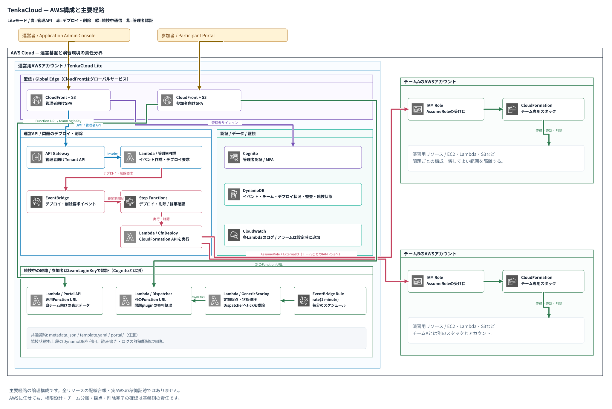

AWS構成 / 開発の試行錯誤PRESENTATIONS / 設計と実践の記録
発表でたどる、TenkaCloudの設計。
クラウド演習の作り方、運用を任せる境界、暗号を使って学ぶ体験。発表資料と構成図をまとめました。
暗号バトル / 教材設計LEAK → HUNT
CCoE / クラウド人材育成BUILD → SHIP
StackStack / プロダクト紹介StackStack on TenkaCloud
PRESENTATIONS / 設計と実践の記録
クラウド演習の作り方、運用を任せる境界、暗号を使って学ぶ体験。発表資料と構成図をまとめました。

AWS構成 / 開発の試行錯誤